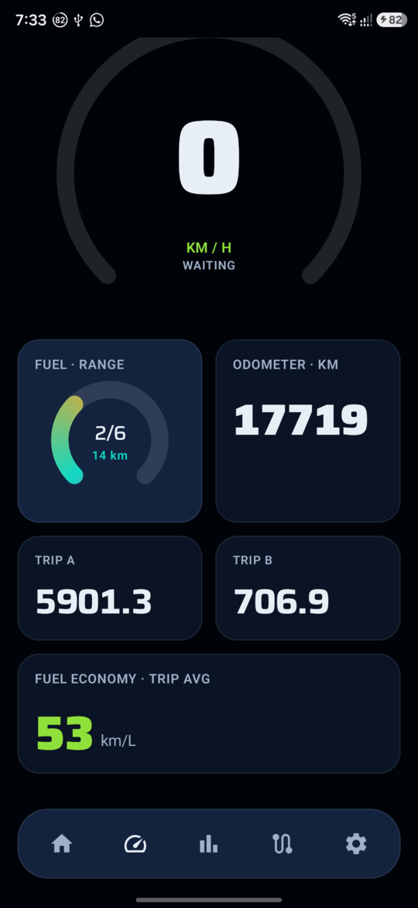
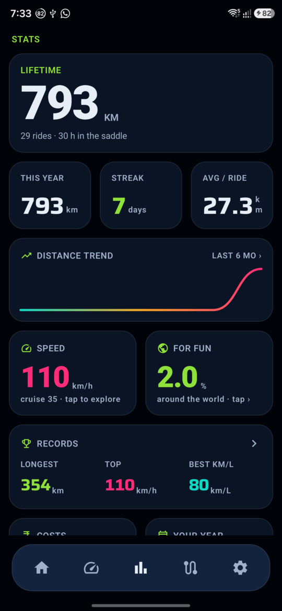
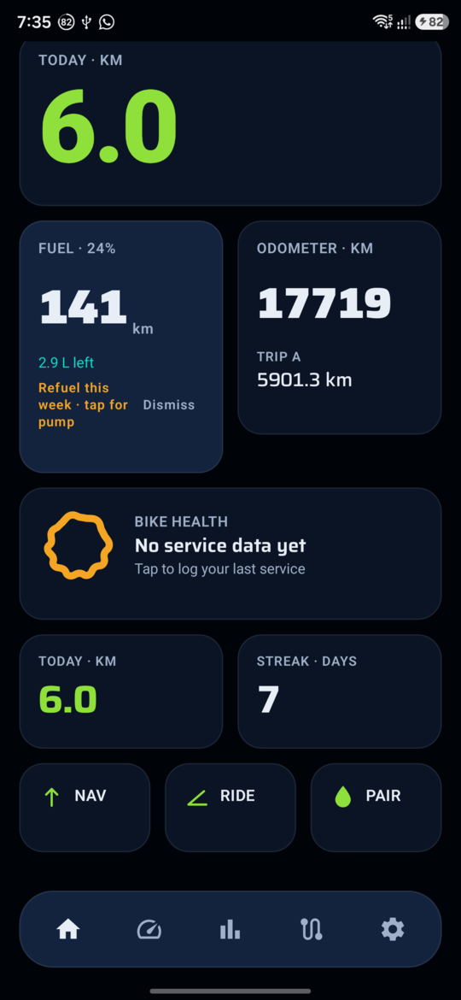
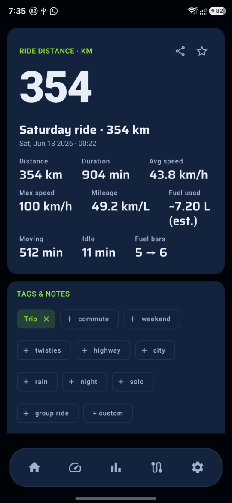
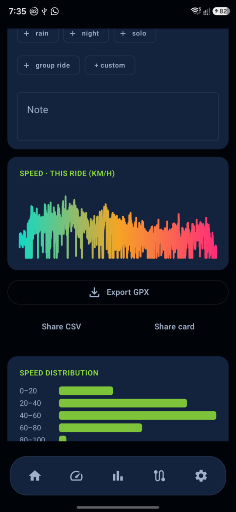
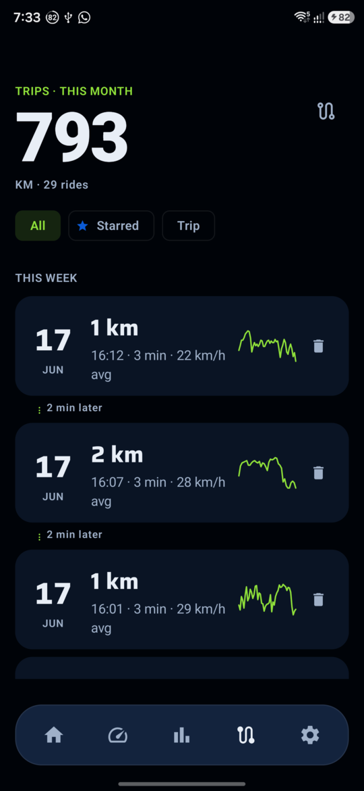

Suzuki Connect RE
Reverse-engineering a motorcycle's Bluetooth cluster protocol — then building a from-scratch Android app to replace the stock one
My 2023 Suzuki Gixxer SF 150 has a Bluetooth-enabled instrument cluster that pairs with Suzuki's stock app for turn-by-turn navigation — routed through Mappls maps, with a UX I didn't love and no way to extend. So I set out to understand the protocol completely, then build my own replacement: Google Maps navigation pushed to the cluster, live telemetry on the phone, and ride analytics the stock app never offered.
There was no documentation. The bike speaks a proprietary binary protocol over a vendor BLE service, and the only reference was the stock app's compiled code. I worked it out the hard way — walking the GATT table on the live bike, decompiling the app with JADX, hooking it at runtime with Frida, and cross-referencing wire captures against the app's own logic until every message type was decoded.
The result is two things: a fully documented protocol spec, and REDLINE — a Kotlin/Jetpack Compose Android app that drives the cluster end-to-end. It's a personal, educational reverse-engineering project; no proprietary Suzuki code is redistributed.
A GATT walk on the live bike revealed a single vendor service exposing two characteristics: one to write phone→bike, one to receive bike→phone notifications. Every message on the wire is exactly 30 bytes with a consistent envelope — a 0xA5 header, an ASCII type byte, a body, a checksum, and a 0x7F terminator.
byte 0 : 0xA5 header byte 1 : ASCII type e.g. '1','3','6','7' bytes 2..27 : body time / distance / flags / telemetry byte 28 : checksum sum(payload[1:28]) mod 256 byte 29 : 0x7F terminator
I confirmed the checksum algorithm directly from the decompiled source rather than guessing it from samples, then mapped each message type to its purpose: display refresh (time + distance + maneuver), phone and bike heartbeats, and an identity push. One non-obvious finding: the cluster is response-driven — it sends nothing until the phone writes first, so a passive listener captures zero notifications.
The discipline that made this work was treating every claim as a hypothesis until the evidence settled it. Several early conclusions were wrong and got walked back in writing — a Wireshark dissector mislabelled the vendor characteristics as a standard digital-key spec, and I'd assumed the bike had an embedded SIM phoning home until physical inspection proved it had none. Each correction is logged with what was assumed, what was actually true, and the evidence that flipped it.
Once the protocol was understood, I built a full Android app around it. REDLINE encodes Google Maps navigation into the cluster's frame format, reads telemetry the bike emits, and layers on the ride tooling the stock app lacks — all on-device, with no account and no cloud.
A few screens from REDLINE running against the actual bike — built with Jetpack Compose, dark-first, with a visual identity inspired by the cluster itself.






All data shown is real, captured from my own bike. Identifiers have been kept out of the public repository.
The RE side combined static and dynamic analysis. JADX decompiled the stock app (most class names were unobfuscated, which made the checksum and frame construction readable). Frida hooked the live app to watch BLE writes and the semantic events behind them. Android's HCI snoop log captured the raw bytes on the wire, and a small Python toolkit on the laptop (bleak for BLE, tshark for the captures) let me replay and forge frames against the bike to test each hypothesis.
Everything is documented as it happened: a living protocol spec for the current best understanding, and a chronological discoveries log that keeps the wrong turns rather than silently overwriting them — so the reasoning is auditable, not just the conclusions.